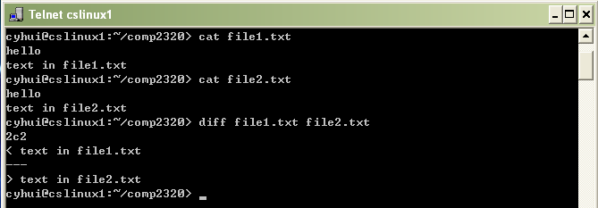

File operation command
| cmp |
cmp file1 file2 |
Compare the contents of file1 and file2 |
|
| diff |
diff file1 file2 |
Compare the contents of text file file1 and file2 |
|  |
| comm |
comm file1 file2 |
Display the common lines of two sorted file |
|
| join |
join file1 file2 |
Join two sorted text files by their key |
|
| head |
head -n10 file1 |
Print the first 10 lines for file1 |
|
| tail |
tail -n10 file1 |
Print the last 10 lines for file1 |
|
| sort |
sort file1 |
Sort the contents of file1 |
|
| sort |
sort file1 file2 |
Sort and merge the contents of file1, file2 |
|
| touch |
touch file1 |
Set the access and modification time of file1 to now |
|
| uniq |
uniq file1 |
Removes successive duplicated lines from file1 |
|
| wc |
wc file1 |
Display word count of file1 |
|